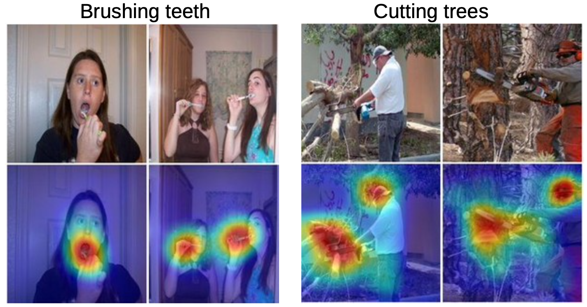
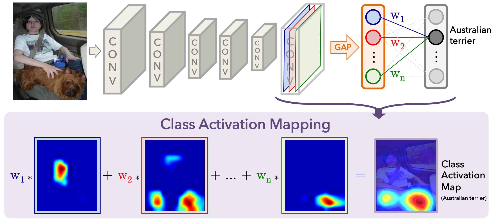
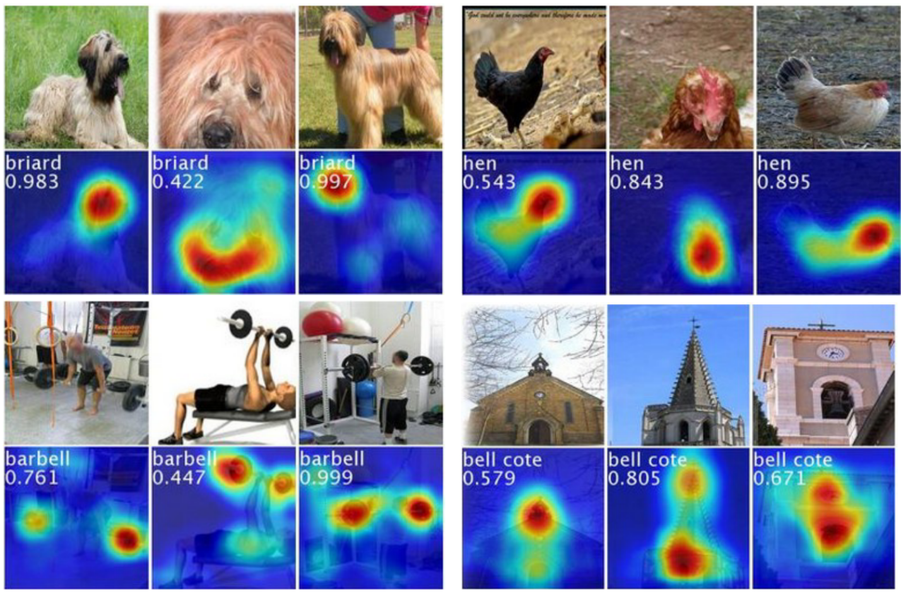
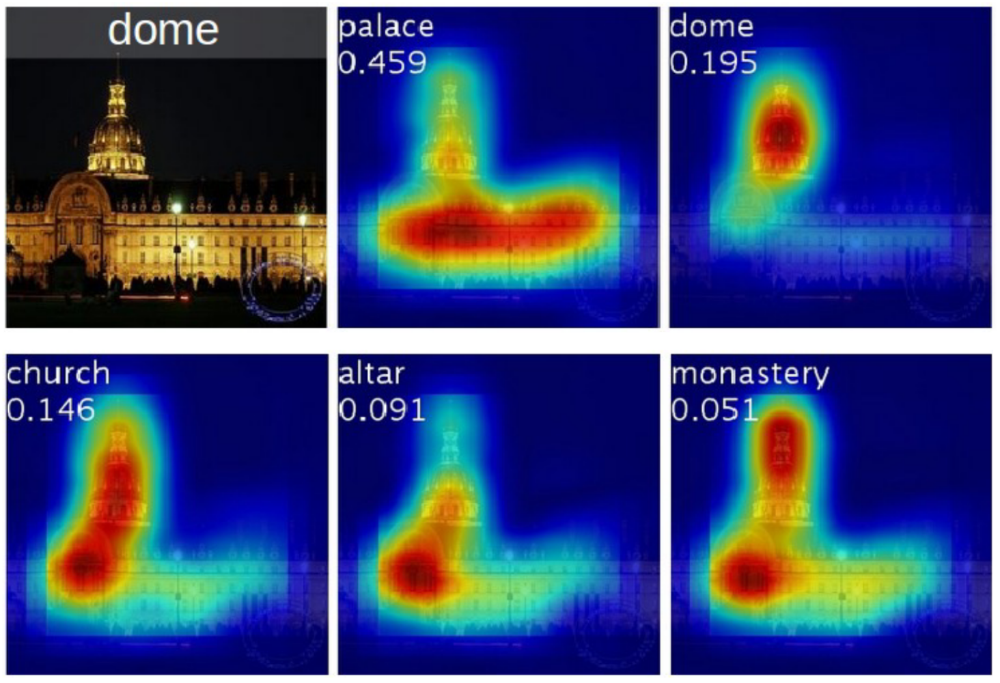
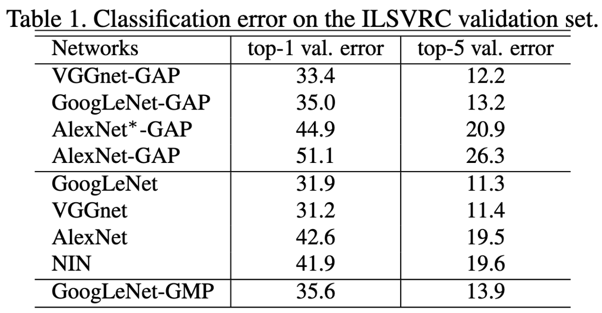
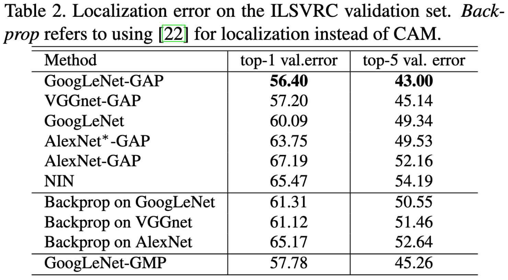
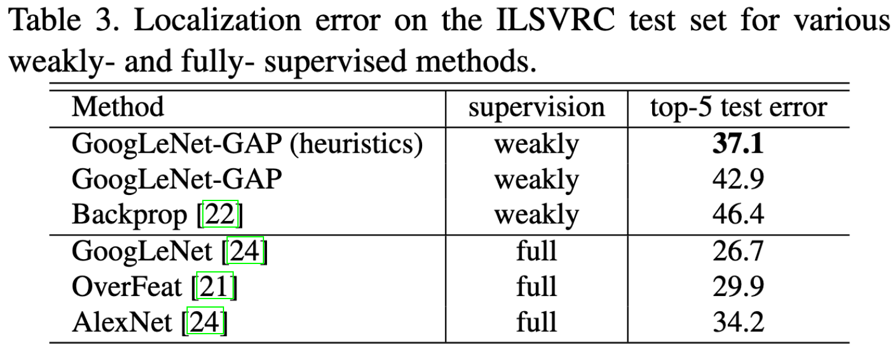
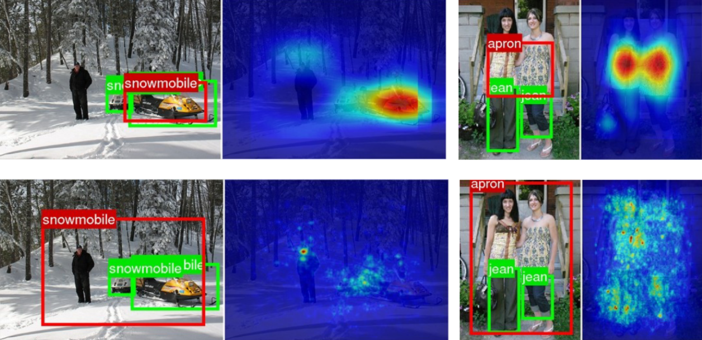
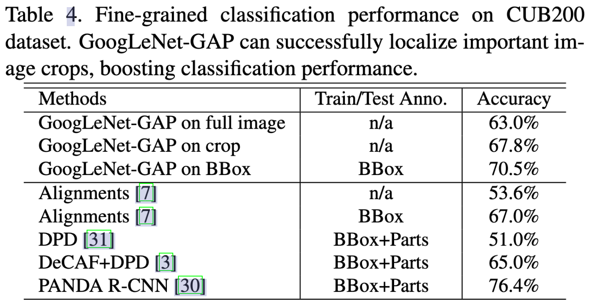
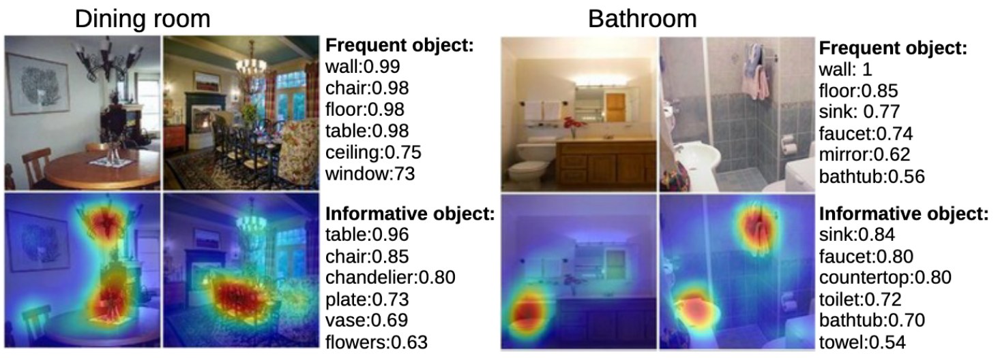

可解释性深度学习：Class Activation Map (CAM)
本文主要介绍可解释性深度学习方向的一个重要工作：Class Activation Map (CAM)。
简介
Class Activation Map (CAM)，即类激活映射图是在论文 Learning Deep Features for Discriminative Localization 中提出来的。CAM 图可以帮助我们可视化输入图像中模型感兴趣的区域，对于深度学习的可解释性研究有非常大的帮助。图 1 所示的是一个动作分类任务的 CAM 图，可以看到类别刷牙对应了手和嘴巴部分，类别砍树对应了电锯和人头部分

图1：动作分类任务的 CAM 图例子
CAM 的生成过程
给定一张图像，使用 $f_k(x,y)$ 表示最后一个卷积层输出的特征图中第 $k$ 个通道中空间位置位于 $(x,y)$ 处的激活值，那么在通道 $k$ 上进行 Global Average Pooling (GAP) 之后的结果为 $F^k = \sum_{x,y} f_k(x,y)$（这里的 GAP 应该还要除以特征图的长宽之积，论文作者没有写明）。因此，给定一个类别 $c$，softmax 的输入 $S_c = \sum_k w_k^c F_k$，其中 $w_k^c$ 表示特征图 $k$ 的对于类别 $c$ 的权重（重要性）。最后 softmax 关于类别 $c$ 的输出概率为 $P_c = \frac{\exp(S_c)}{\sum_c \exp(S_c)}$。

图2：CAM 图的计算示意图
如图 2 中所示，最后一层卷积中每个通道的特征图（使用不同颜色标出）经过 GAP 后得到对应的激活值 $F^k$，对于类别 Australian terrier (澳大利亚梗)，softmax 的输入就是按权重（$W_1, W_2, …, W_n$）把这些 GAP 之后得到的激活值做一个 weighted sum。
把 $F^k = \sum_{x,y} f_k(x,y)$ 放到 $S_c = \sum_k w_k^c F_k$ 中可得
$$ S_c = \sum_k w_k^c \sum_{x,y} f_k(x,y) = \sum_{x,y} \sum_k w_k^c f_k(x,y) \tag{1} $$
定义 $M_c$ 为类别 $c$ 的类激活映射，那么对于特征图上空间中的每个点有
$$ M_c(x,y) = \sum_k w_k^c f_k(x,y) \tag{2} $$
因此，$S_c = \sum_{x,y} M_c(x,y)$，$M_c(x,y)$ 则直接表示了 CAM 图中位于 $(x,y)$ 处的激活值对于类别 $c$ 的重要性。从图 2 下半部分可以看到，CAM 图就是不同通道的特征图按照学习到的权重加权求和得到的，最后再 resize 到和输入图像相同的大小，叠加起来就得到了输入图像上的类激活图。图 3 是作者在 ILSVRC 数据集上可视化的效果：

图3：ILSVRC 数据集上的一些 CAM 图示例
从图 4 可以看出，同一张图像中，不同类别对应的 CAM 图也是不同的。例如宫殿（palace）和穹顶（dome）明显对应图像中不同的区域。

图4：同一张图像中不同物体的 CAM 图
实验结果
实验设置
作者使用了三个模型进行实验，分别是 AlexNet、VGG 和 GoogLeNet，作者将每个网络的最后一个 FC 替换为 GAP，之后跟着一个全连接的 softmax 层，其他具体的实验设置可以看原论文。
分类
如下表所示，作者比较了修改后的网络和原始网络的分类性能，发现修改后的网络并没有性能上的下降。

此外，作者还对 GAP 和 Global Max Pooling (GMP) 进行了比较，作者认为 GAP 能够考虑特征图中所有位置的信息，而 GMP 只会考虑特征图中值最大的一个点，因此使用 GAP 能够在 CAM 图中更好地定位物体位置。从表 1 中可以看出 GMP 其实也没有降点很多。
目标定位
作者还进行了目标定位的实验，并通过 CAM 图绘制出了 bounding box。具体绘制方法是，首先把激活图中所有的大于激活图中最大值 20% 的元素分割出来，然后计算这些元素组成的一个最大的连通图，bounding box 则是包含最大连通图的方框。下表是目标定位的性能对比，可以看到使用 CAM 定位的性能还是不错的：

下表是和有监督的方法对比，CAM 和有监督的性能比较接近了：

下图是目标定位的例子，绿色是 ground truth，红色是 CAM 图得到的 bounding box，可以看出大体上的位置还是正确的：

图5：使用 CAM 生成 bounding box，第一行对应 GoogLeNet，第二行对应 AlexNet
此外，作者发现使用 CAM 图生成的 bounding box 能够提升分类任务的性能。如下表所示，第一行是使用全图进行分类，第二行是先用 CAM 图生成 bounding box，然后再在使用 bounding box 裁剪后的图像上进行分类，结果接近第三行带有 bounding box 标注的性能：

通用性
如图 6 所示，作者使用训练好的 GoogLeNet 在其他数据集上提取 CAM 图，发现 CAM 图能够很好的对应分类标签，说明 CAM 图的生成具有较强的泛化性。

图6：CAM 在其他分类数据集上的效果
知识发现
如下图所示，通过 CAM 图还可以发现和某个场景最相关的物体：

图7：左）CAM 图中和餐厅最相关的有桌子、椅子、盘子等。右）CAM 图中和浴室最相关的物体有洗手池、水龙头等
此外作者还做了使用 CAM 图检测文字、视觉问答等实验，都发现 CAM 图能够很好显示出预测结果最关注的图像部分。
代码
- 论文源码：https://github.com/zhoubolei/CAM
- 一个不错的 CAM 库：https://github.com/frgfm/torch-cam
总结
CAM 是可解释性深度学习方向上非常重要的一个工作，能够帮助我们可视化模型的关注点，同时也为我们的深度模型提供了一个非常有用的 Debug 工具。